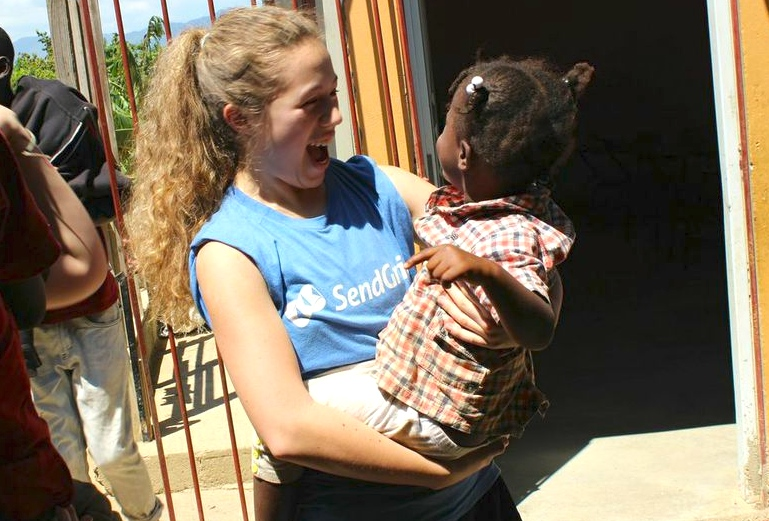

Experience
Projects

Neuroanalytics
Over the summer and fall of 2015, I designed and implemented algorithms and conducted statistical analysis of large datasets to determine dependencies between neurons in the auditory and prefrontal cortices.
Computer Science Society
I served as the Programming Director for Fordham's CS club.
Learn more about CSS!

Global Outreach
Global Outreach
Feat. Catiyana
This summer in 2016, I will be leading a service-immersion trip to Brazil through Global Outreach. Previously, I served in the Dominican Republic at the Joan Rose Foundation. Learn more about Global Outreach here
br00t
I assisted with front-end developing for br00t, a cybersecurity project that uses cloud computing and brute force to crack server passwords.
Contact
Get in touch!